Introducing FuSiLi: Fused Sinkhorn-Localized Similarity
Understanding music requires understanding localized relationships across data modalities, e.g., how time in performance audio maps onto position in a score image. Yet supervision for such local correspondences is difficult to obtain—in practice, we often only have access to coarser global supervision like paired segments of audio and images. To address this gap, we propose FuSiLi (Fused Sinkhorn-Localized Similarity), a similarity score for multimodal contrastive learning operating directly on local image patch and audio frame features via Sinkhorn-based soft alignment. We show that FuSiLi (i) effectively learns local relationships, (ii) requires only global supervision, and (iii) retains the global alignment capabilities of conventional contrastive approaches. We fine-tune pretrained CLIP and CLAP encoders on pairs of raw sheet music images and audio using a hybrid contrastive objective combining FuSiLi with conventional global similarity. We evaluate on cross-modal retrieval and frame-level alignment tasks against a range of global and local baselines, showing that our approach outperforms them on local alignment while remaining competitive on retrieval.
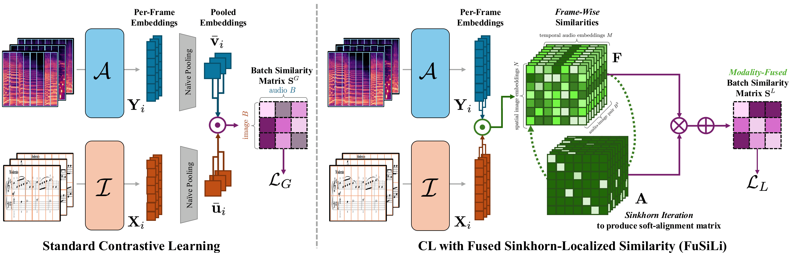
Pipeline of standard contrastive learning vs. FuSiLi. Standard approaches compute batch-wise similarity using pre-pooled representations, removing any capacity for explicit cross-modal locality. In contrast, our fuse-then-pool FuSiLi computes frame-wise similarity matrices (frame similarity Sij) for each batch pairing. We then apply Sinkhorn iteration to enforce soft one-to-one correspondences at the frame level. Only after this alignment step do we pool representations into global embeddings, which now encode localized cross-modal structure in addition to global semantics.
We evaluate our best-performing configuration (FuSiLi, Same Piece + Pos. Mutations) qualitatively on frame-level cross-modal alignment between score images and audio performances. We visualize retrieved image patches for each audio frame to assess local correspondence quality under both in-domain and out-of-domain settings, and compare it against a standard global contrastive baseline trained with the same configuration (Baseline, Same Piece + Pos. Mutations) to highlight localized alignments learned by FuSiLi. We also include the alignment matrices produced for each example.
On the MSMD dataset [1], we visualize top-1 image patch retrieval for each audio frame.
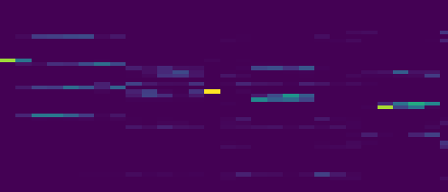
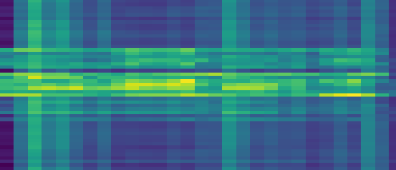
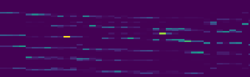
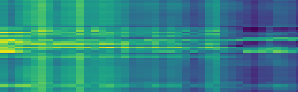
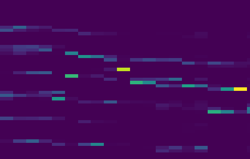
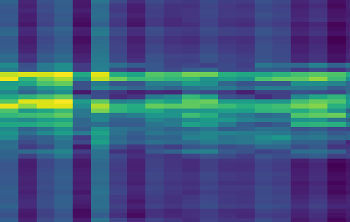
We further evaluate robustness under domain shift using the YTSV dataset [2]. In this setting, we visualize the top-3 most similar image patches per audio frame, reflecting increased ambiguity in cross-domain alignment.
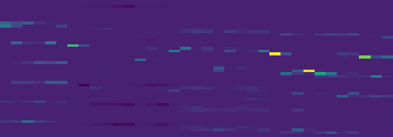
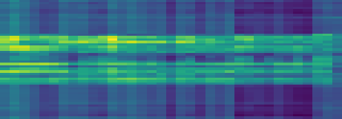
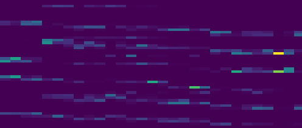
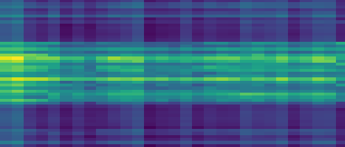
| Local Eval | Point & Retrieve | Global (PDMX[3]) | Global (YTSV[2]) | Global (MSMD[1]) | ||||||||||||
|---|---|---|---|---|---|---|---|---|---|---|---|---|---|---|---|---|
| Method | Top-1 | PPL | I2A | A2I | I2A R@1 | I2A MRR | A2I R@1 | A2I MRR | I2A R@1 | I2A MRR | A2I R@1 | A2I MRR | I2A R@1 | I2A MRR | A2I R@1 | A2I MRR |
| Baseline | 0.24 | 36.55 | 0.01 | 0.05 | 0.73 | 0.83 | 0.73 | 0.83 | 0.07 | 0.12 | 0.03 | 0.07 | 0.27 | 0.38 | 0.28 | 0.41 |
| FuSiLi | 0.30 | 34.24 | 0.14 | 0.14 | 0.72 | 0.83 | 0.73 | 0.83 | 0.05 | 0.10 | 0.04 | 0.08 | 0.25 | 0.38 | 0.25 | 0.39 |
Bolded values correspond to the task visualized in the videos above.
[1] Matthias Dorfer, Jan Hajič jr., Andreas Arzt, Harald Frostel, Gerhard Widmer. Learning Audio-Sheet Music Correspondences for Cross-Modal Retrieval and Piece Identification. Transactions of the International Society for Music Information Retrieval, issue 1, 2018.
[3] Jongmin Jung, Dongmin Kim, Sihun Lee, Seola Cho, Hyungjoon So, Irmak Bukey, Chris Donahue, Dasaem Jeong.
U-MusT: A Unified Framework for Cross-modal Translation of Score Images, Symbolic Music, and Performance Audio.
IEEE Transactions on Audio, Speech and Language Processing, 2025. IEEE.
[2] Phillip Long, Zachary Novack, Taylor Berg-Kirkpatrick, Julian McAuley. PDMX: A Large-Scale Public Domain MusicXML Dataset for Symbolic Music Processing. ICASSP 2025 IEEE International Conference on Acoustics, Speech, and Signal Processing (ICASSP), 2025. IEEE.